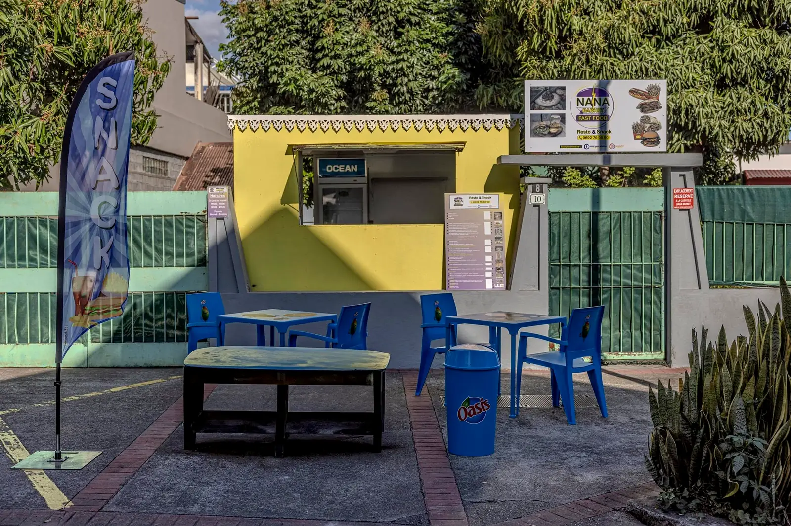
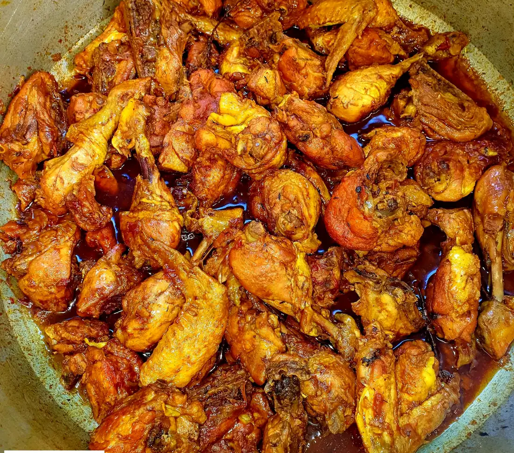
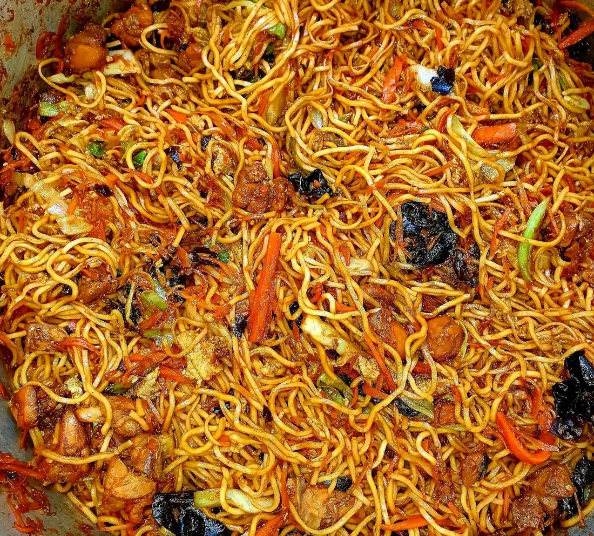
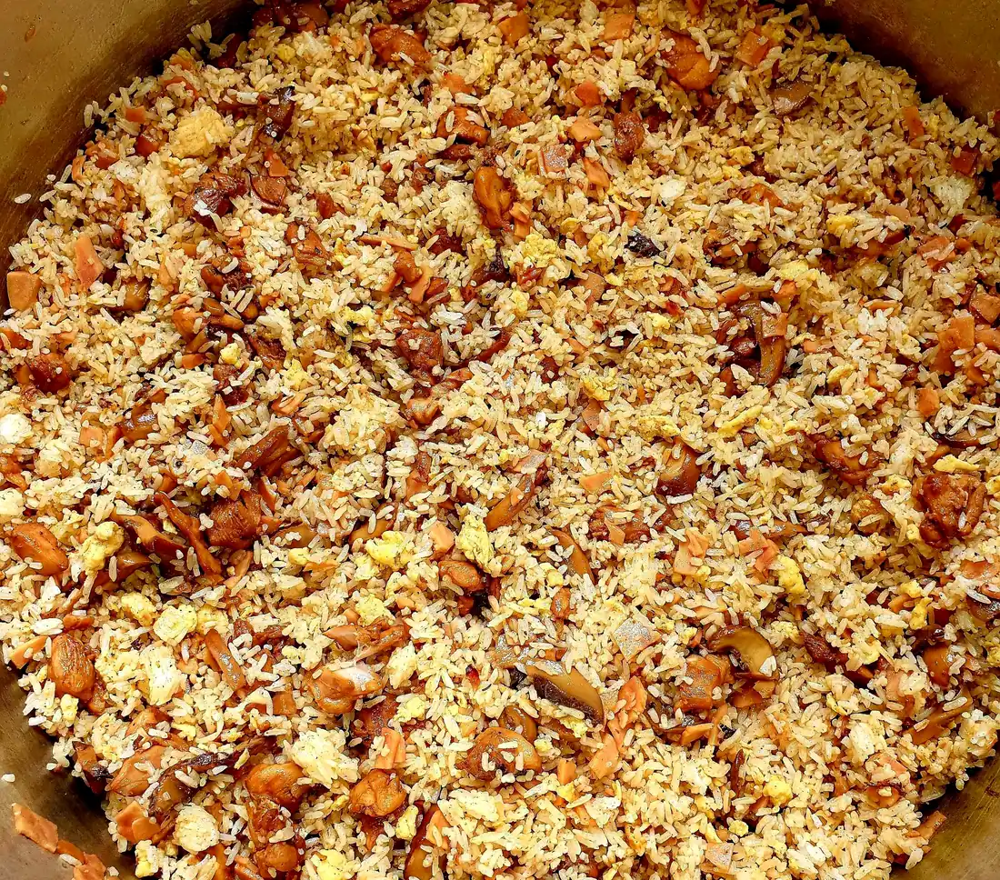
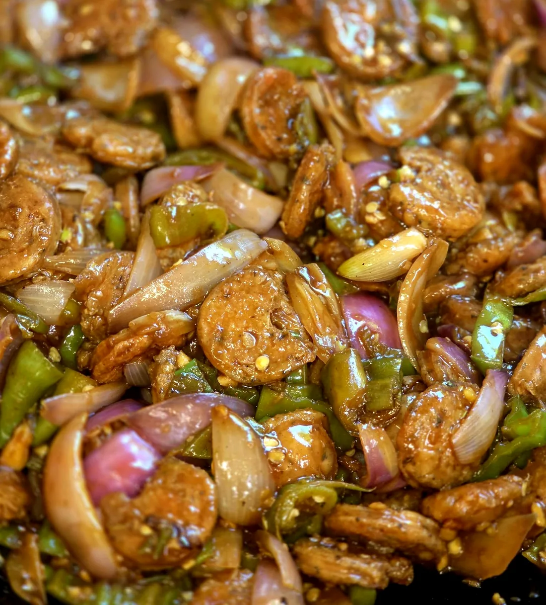
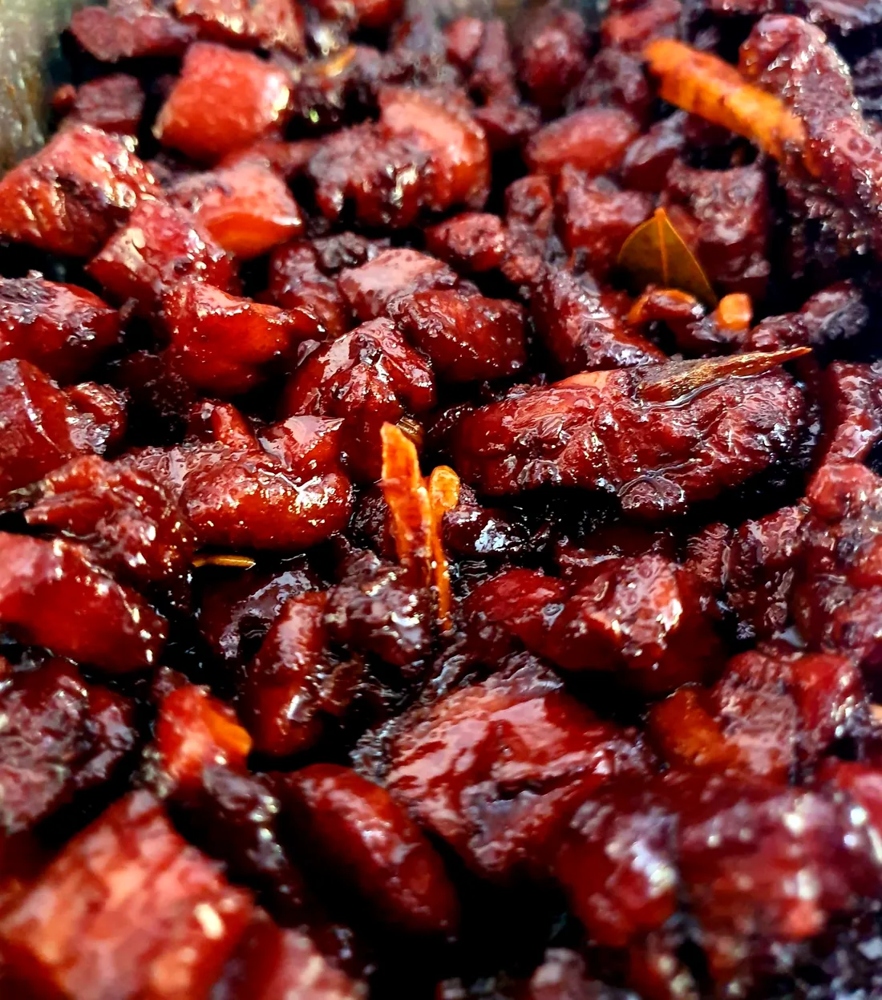
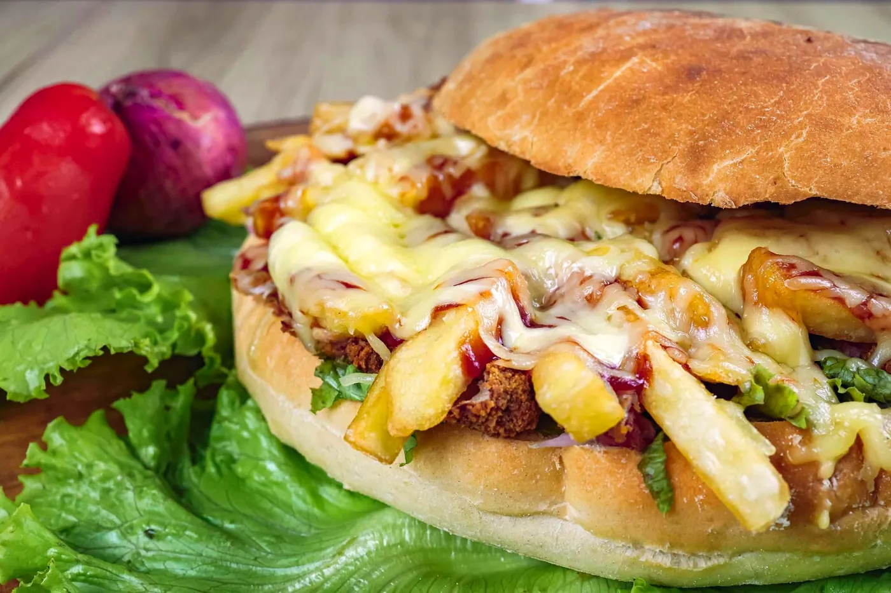

Snack · Entre-Deux · La Réunion
NANA barket& fastfood
Les cary le midi, le fastfood le soir : sur place, à emporter ou en livraison, à l'Entre-Deux.
10 rue du Commerce, 97414 Entre-Deux
Deux ambiances, un même snack
Le midi les cary,
le soir le fastfood
11h – 14h
Repas le midi
Les cary et les plats du jour, servis sur place ou à emporter. Le menu du jour est partagé sur la page.
18h – 21h
Fastfood le soir
Toasty Crousty, pain pizza et américains spéciaux bien chargés, à savourer en terrasse ou à la maison.
Les marmites du midi
Le menu du jour, fumant
Ici, tout part de la marmite : riz cantonnais, sauté mines, cary poulet… Voici les plats publiés sur la page ces derniers jours, en vraies photos.





Faites glisser pour voir tous les plats
Le soir
Ultra crousty, maxi goût

Publié le 8 nov.« Crousty à l'extérieur, fondant à l'intérieur ! » : la promesse des nouveautés du snack.
Le snack
Un kiosque jaune, une terrasse bleue
Repérez le comptoir jaune, le drapeau « SNACK » et les tables bleues de la terrasse : vous y êtes, au 10 rue du Commerce.
- En cuisine, le chef @rodolphe_fit_boy.
- Livraison repas sur l'Entre-Deux.
- Des soirées qui rassemblent : la Fèt Kaf se fête aussi au snack.
Pour les fêtes
Noël chez NANA barket
L'an dernier, le snack lançait son Burger de Noël en édition limitée. Cette année, régalez la famille, les collègues ou les copains avec les cary et le fastfood de NANA barket.
Un repas de groupe ou une belle commande pour le réveillon : demandez en un message.
On vous attend